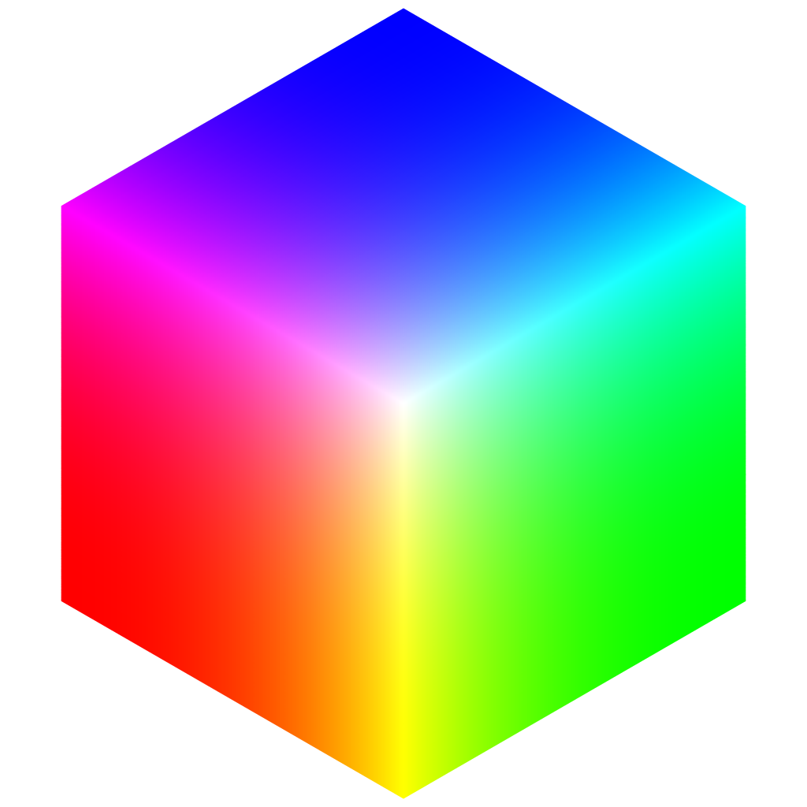

Generating things
with code
Procedural Content Generation
procedural: design a process rather than an object
generation is programmatic & often pseudo-random
PCG are heavily is used in design,
games, art, vfx, architecture...
not important
- coding platform
- coding language
- coding tools & toolchain
- capture device & data sources
important
- data
- space
- process
what PCGs are good at
systematization
create the model of a system
simulation
use the system to process data
exploration
change the system's parameter
corollary: visualisation
rendering the system: 2D, 3D graphics,
video, tangible objects, installation...
system: planet generator
simulation: update the world with game logic
exploration: move & interact with the world
visualisation: rendering a 3D scene
nervous systems - KINEMATICS FOLD
system: triangle based patch modeler
simulation: apply physics rules to the model
exploration: change the base model
visualisation: 3D renders & 3D print
system: use particles to represent a 3D object
simulation: playback of a recorded sequence
exploration: move a virtual camera through space
visualisation: render particles in 3D
system rules:
- spawn particle at a 3D location
- make particle fall & disappear
the particles move & disappear procedurally
the piece is tightly related to the source data
downsides
- mathematical uniqueness is often not
enough to create significant differences - hard to maintain consistent variations
when using numerous variables - hard to assess "good" settings
upsides
- the computer does the boring part
- few paramaters give many variations
- very good at serial content
- emergent behaviours can produce
surprising or unexpected results
1. DATA
N dimensions
continuous VS discrete
the world is a continuous system
computers process discrete data
discretizing the world
continuous data are measureddiscrete data are counted
continuous ⇨ discrete
time ⇨ intervallight ⇨ color palette
reaction ⇨ process
phenomenon ⇨ simulation
N-dimensional objects
a variable number of 'dimensions'
the values of each dimension of an object
can vary without affecting the others
light's dimensions
direction, speed, wavelength, energy
a 1 dimensional unit
a bit: 0 or 1
can only describe whether a
given property of the object
"is" or "isn't"
the 1D extension pack
- bit (0/1)
- byte / octet: 8 bits
- int, float, uint, double: 8, 16, 32, 64 bits
- single character: 7 bits (US ASCII ), 32 bit (UTF-32)
or a character is stored as an array of bits

so, technically, a number is itself
a N-dimensional object
data in 2 dimensions
series of unidimesnsional data- typed linear array: ["a", "b", "c"] / [ 0, 1, 2 ]
- string : "Nicolas Barradeau"
- an empty image: [ width, height ]
- a mono-channel sound : [ value, time ]
- 2D point: [ X, Y ]
data in 3 dimensions
combinatorics of unidimensional data- color: { R, G, B }
- 3D vector: { X, Y, Z }
- binary pixel: { X, Y, value }
data in higher dimensions
complex data structures- pixel, color: { X, Y, R, G, B }
- pixel, color & alpha: { X, Y, A, R, G, B }
- stereo sound: { left, right, time, sampling rate }
- video: pixel, color, sound, time
- 3D object: XYZ, indices, normals, colors, uvs...
N-DIMENSIONS
how many dimensions to a TWEET? {
"coordinates": null,
"favorited": false,
"created_at": "Wed Sep 05 00:37:15 +0000 2012",
"truncated": false,
"id_str": "243145735212777472",
"entities": {
"urls": [
],
"hashtags": [
{
"text": "peterfalk",
"indices": [
35,
45
]
}
],
"user_mentions": [
]
},
"in_reply_to_user_id_str": null,
"text": "Maybe he'll finally find his keys. #peterfalk",
"contributors": null,
"retweet_count": 0,
"id": 243145735212777472,
"in_reply_to_status_id_str": null,
"geo": null,
"retweeted": false,
"in_reply_to_user_id": null,
"place": null,
"user": {
"name": "Jason Costa",
"profile_sidebar_border_color": "86A4A6",
"profile_sidebar_fill_color": "A0C5C7",
"profile_background_tile": false,
"profile_image_url": "http://a0.twimg.com/profile_images/1751674923/new_york_beard_normal.jpg",
"created_at": "Wed May 28 00:20:15 +0000 2008",
"location": "",
"is_translator": true,
"follow_request_sent": false,
"id_str": "14927800",
"profile_link_color": "FF3300",
"entities": {
"url": {
"urls": [
{
"expanded_url": "http://www.jason-costa.blogspot.com/",
"url": "http://t.co/YCA3ZKY",
"indices": [
0,
19
],
"display_url": "jason-costa.blogspot.com"
}
]
},
"description": {
"urls": [
]
}
},
"default_profile": false,
"contributors_enabled": false,
"url": "http://t.co/YCA3ZKY",
"favourites_count": 883,
"utc_offset": -28800,
"id": 14927800,
"profile_image_url_https": "https://si0.twimg.com/profile_images/1751674923/new_york_beard_normal.jpg",
"profile_use_background_image": true,
"listed_count": 150,
"profile_text_color": "333333",
"protected": false,
"lang": "en",
"followers_count": 8760,
"time_zone": "Pacific Time (US & Canada)",
"profile_background_image_url_https": "https://si0.twimg.com/images/themes/theme6/bg.gif",
"verified": false,
"profile_background_color": "709397",
"notifications": false,
"description": "Platform at Twitter",
"geo_enabled": true,
"statuses_count": 5532,
"default_profile_image": false,
"friends_count": 166,
"profile_background_image_url": "http://a0.twimg.com/images/themes/theme6/bg.gif",
"show_all_inline_media": true,
"screen_name": "jasoncosta",
"following": false
},
"source": "<a href=\"http://jason-costa.blogspot.com\" rel=\"nofollow\">My Shiny App</a>",
"in_reply_to_screen_name": null,
"in_reply_to_status_id": null
}represented in ~72 dimensions
data acquisition
your mobile phone
photos, videos, microphone & GPS positions
as well as some "hidden" sensors:
- TYPE_ACCELEROMETER Motion detection (shake, tilt, etc.).
- TYPE_AMBIENT_TEMPERATURE Monitoring air temperatures.
- TYPE_GRAVITY Motion detection (shake, tilt, etc.).
- TYPE_GYROSCOPE Rotation detection (spin, turn, etc.).
- TYPE_LIGHT Controlling screen brightness.
- TYPE_LINEAR_ACCELERATION Monitoring acceleration along a single axis.
- TYPE_MAGNETIC_FIELD Creating a compass.
- TYPE_ORIENTATION Determining device position.
- TYPE_PRESSURE Monitoring air pressure changes.
- TYPE_PROXIMITY Phone position during a call.
- TYPE_RELATIVE_HUMIDITY Monitoring dewpoint, absolute, and relative humidity.
Open Data
- statistical analysis
- mostly "geo-social" data
- often geolocated
tracking devices
- webcam
- microphone
- kinect
- leap motion
- VR devices: VIVE, Oculus
custom devices
- Arduino boards + Processing
- all manners of cheap sensors:
gesture detection, heat detector,
360° scanners, wind, rain, smoke...
synthetic data
- noise
- fractals
- photogrammetry
(build 3D models from 2D pictures) - GANs (AI)
there are plenty of data around us
we use more and more complex data (feature vectors)
reduced to a set of unidimensional variables,
these data can shift between various spaces
2. space
fields of representationgeometric spaces
2D cartesian space
polar space
cylindrical space
spherical space
3D cartesian space
color spaces
RGB color space
HSL color space
HSL color space
higher dimensions
4D space
point in a 4D space
line in a 4D space
cube in a 4D space
RGBA (4D) color space
the t-SNE algorithm reduces data dimensionality
and creates similarity clusters
keep the parameter count as low as you can
other spaces
physical/tangible space
sound space
notes on blindnessnon euclidean space
3. process
hic sunt draconesgrammar
series of rules that defines allvalid sentences of a language
formal grammar
a formal grammar is based on production rules, takesan axiom as an input and determines if it is valid
the previous illustration is a "finite state machine"
it describes all the production rules relationships
rather than writing a dictionary of all the valid axioms,
we use a tool to ckeck if an axiom is valid
this is the essence of procedural generation:
describing the rules of productionrather than the objects themeselves.
L-system
variation on formal grammar used to modelplants' growth, it introduces the notion of
rewriting, trees and recursion
variables : A B
axiom : A
rules : (A → AB), (B → A)n=0: A start (axiom/initiator)
/ \
n=1: A B (A→AB)
/| \
n=2: A B A (A→AB), (B→A)
/| | |\
n=3: A B A A B (A→AB), (B→A), (A→AB)
/| | |\ |\ \
n=4: A B A A B A B A (A→AB), (B→A), (A→AB), (A→AB), (B→A)
context free grammar
recursively applies production rules and stops when the axiom only contains terminal symbolsrecursion
with a unified data model, any process can be applied to the dataset